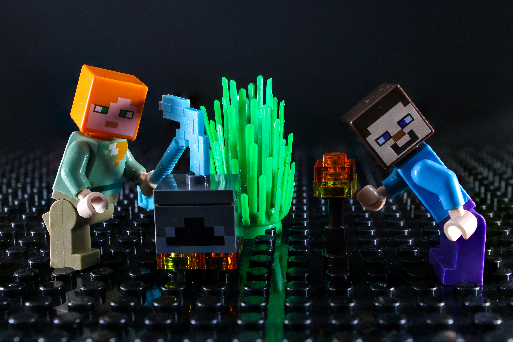

A Young and Talented Web Developer and User Interface Designer!
Building My First Minecraft House
by Matthew Aberdeen
Building my first house in Minecraft taught me the
importance of planning before starting a project.
I chose a small area near a forest so I could easily
collect wood and other materials. Using oak planks,
cobblestone, and glass, I created a simple house with
enough space for a bed, crafting table, furnace, and
storage chests. Before nightfall, I added torches
around the entrance to help keep the area well lit.
Once the basic structure was complete, I focused on
making the house feel like a home. I added windows
overlooking the forest, a small farm beside the
building, and a fenced path leading to the entrance.
The hardest part was designing a roof that looked
interesting without using too many materials.
Experimenting with wooden stairs helped me create a
sloped roof and showed me how small details can
improve a simple build.
Exploring Caves in Minecraft
by Matthew Aberdeen

Exploring caves is one of my favourite activities in
Minecraft because every trip feels like a new adventure.
Before heading underground, I pack torches, food, spare
tools, and blocks for crossing gaps. On my latest trip,
I found a cave near my base and followed it down to a
large chamber. There was plenty of coal and iron to
collect, but I had to watch carefully for monsters
hiding in the darker areas.
The biggest challenge was finding my way back after
exploring several tunnels. I started placing torches
on the right-hand wall as I moved deeper, which helped
me follow them on my left when returning. I also
blocked off dead ends to avoid exploring the same
passages again. By the time I reached the surface,
I had enough resources to upgrade my equipment and
a better plan for my next underground trip.